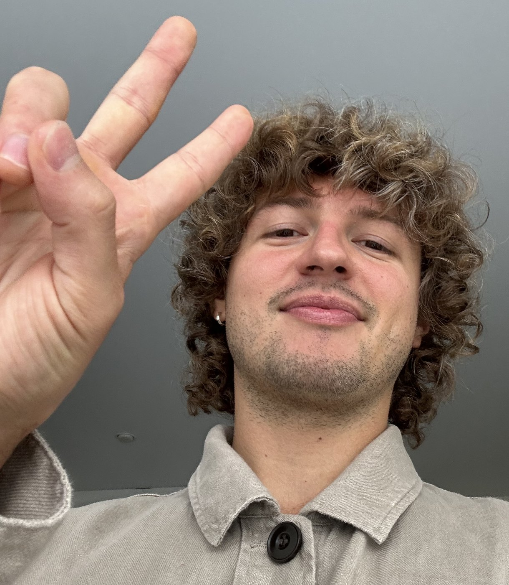
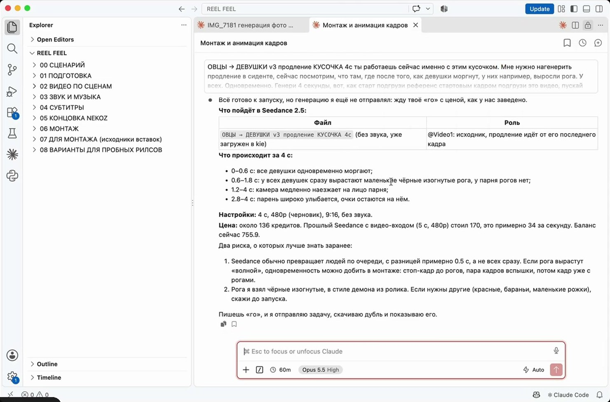
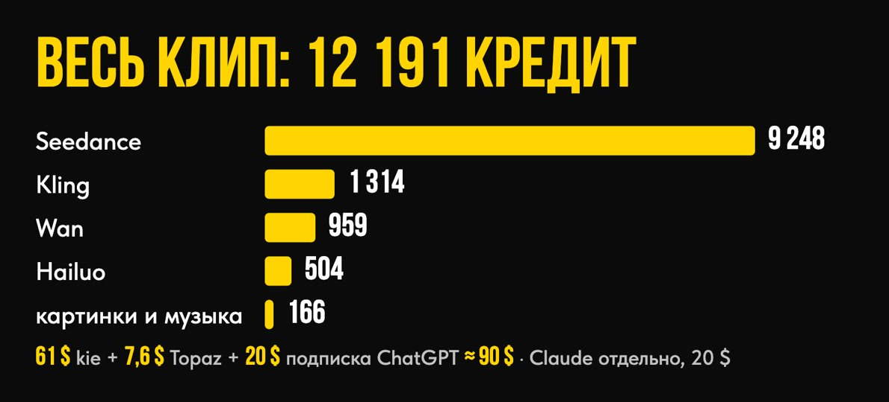
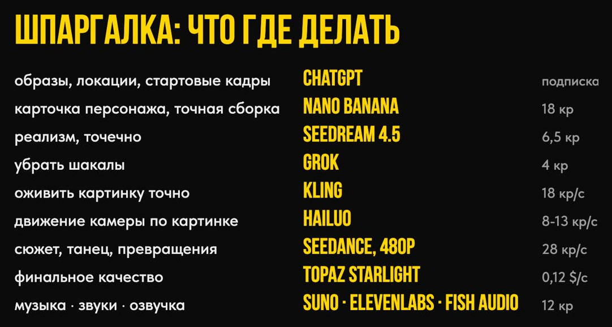
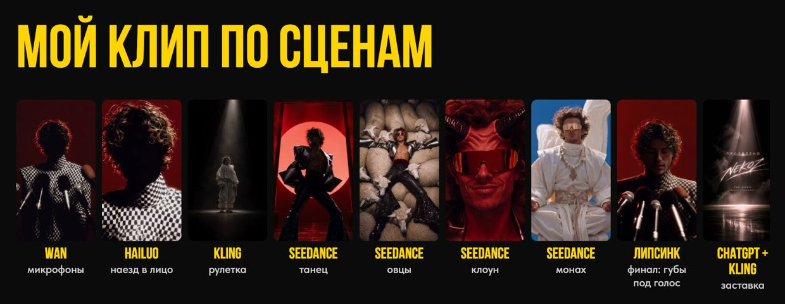
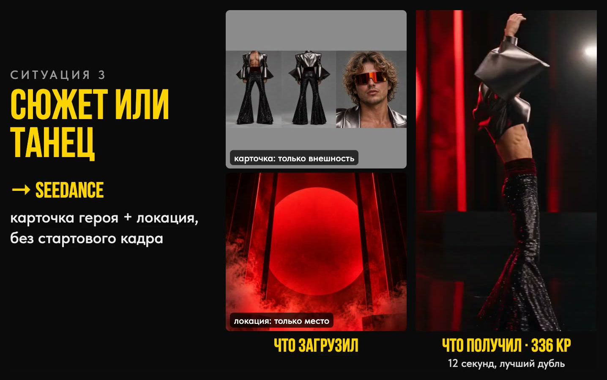

Как я делаю клипы нейросетями, не заходя ни в один интерфейс, и трачу на генерации вдвое меньше
Все 63 секунды этого клипа я сделал, не открыв ни одного сайта нейросетей. Ни одного интерфейса, ни одной кнопки «сгенерировать».
Я просто сидел и говорил словами, что хочу увидеть. Claude на моём компьютере делал всё остальное. 🤯
Привет, это Фил!

Три года я делаю ИИ-контент. Работал с Элджеем, Анной Асти, Фараоном, Валей Карнавал, обучил больше 500 человек на курсе Game of Creators.
Так что со старым способом генерации я знаком очень хорошо. Десятки генераций ради трёх секунд. Пять открытых сайтов. Сгорающие подписки. Неудобный и запутанный процесс.
Теперь всё делается по-другому. Так, как я сделал этот клип.
Полторы минуты с экрана, включи звук
Магии тут нет. Есть три вещи:
Сам загружает фото в нейросеть, генерит, скачивает и раскладывает по папкам.
Seedance, Kling, Nano Banana и другие через самый дешёвый агрегатор (kie.ai), картинки в ChatGPT. Сайты он открывает сам.
Знает, какую нейросеть брать, какой промпт писать и что загружать. Собран на моём клипе и на разборе фильма ONEIRIC (20 тысяч генераций).
Ты говоришь, что хочешь увидеть. Остальное делает он.
Не нужно разбираться в нейросетях и промптах. Говоришь по-русски, он делает.
Вся рутина между сервисами уходит к нему. Тебе остаётся режиссура.
Работает с любым видео
Я показываю метод на своём клипе, но схема одна для любого ролика, который делается нейросетями. Меняются только твоя идея и референсы, порядок работы тот же.
Хочешь работать так же? Всё это ставится по шагам из гайда.
Купить гайд за 2 990 ₽Весь клип, 63 секунды. Тот же объём через подписки вышел бы почти вдвое дороже.
Почему так:
Через kie.ai платишь почти по себестоимости нейросетей. Без комиссий площадок и сгорающих подписок.
Скилл с первой попытки знает, какую нейросеть взять и какой промпт написать.
Героев и кадры Claude рисует в ChatGPT по обычной подписке. Видео запускаешь, только когда кадр идеальный.
Перед каждой генерацией показывает цену и самый выгодный вариант, ждёт твоего «го». Пробы делает в черновом качестве: 46 $ вместо ~94 $.
Апскейл всего готового клипа в Topaz обошёлся в 7,6 $.
Вот как это выглядит в работе. Перед запуском видео Claude расписывает, что будет в кадре по секундам, называет цену и ждёт моего «го». Пока я не написал «го», ни один кредит не тратится:


Расчёт на 04.10.2026. Claude в обоих случаях сверху, 20 $ в месяц.
Это реальный счёт за весь клип по каждой нейросети. Картинки шли по подписке ChatGPT, а за видео я платил, только когда кадр уже был готов.
Как всё это настроить, я по шагам разобрал в гайде «Клип словами», о нём в конце. А пока покажу, на чём обжёгся сам.
В Инсте каждый второй учит: закинул картинки, написал один промпт, получил кино. Я решил проверить.
Собрал в Pinterest пять картинок под свой клип, сделал образы со своим лицом и отдал всё двум нейросетям одним промптом. Сел ждать кино.
Wan выдал 18 секунд слайд-шоу: просто пролистал мои картинки. Seedance впихнул весь сюжет в 8 секунд, герои мелькали, как на перемотке.
За вечер ушло около 3 000 ₽, половина всех кредитов. В клип из этого попала пара секунд.
Тогда стало понятно: одной кнопкой клип не собрать.
Клип собирается по сценам
Сначала карточка героя и пустая локация. Под каждую сцену своя нейросеть. Сначала доводишь картинку, потом запускаешь видео. Ровно так работает скилл-режиссёр.
Вот та же сцена, собранная по шагам. Один лучший дубль стоил 336 кредитов, меньше той вечерней попытки в Seedance. И это уже кино:
«Получается, нужно изучить десятки нейросетей?»
Их уже выучил Claude. Теперь он сам знает, что клип собирается по сценам. Попросишь весь сюжет одним промптом, он подскажет, что так не выйдет, разобьёт на сцены и предложит, как сделать лучше. Он этому обучен, а ты просто говоришь, что хочешь увидеть.
Три правила, которые сэкономят деньги уже на следующей генерации, даже без Claude:
И шпаргалка, по которой я сам выбираю нейросеть под каждую задачу. Сохрани себе 👇

Всё это можно делать руками: открывать сайты, переписывать промпты, качать дубли. А можно поставить режиссёра, который делает это сам, пока ты говоришь, что хочешь увидеть.
Как поставить его себе и как с ним работать, я разобрал по шагам в гайде «Клип словами».
Купить гайд за 2 990 ₽7 видеоуроков, около 1 часа 40 минут. В том порядке, в каком я сам прошёл путь, только без моих шишек.
Как я слил подписку за вечер. Главная ошибка новичка, чтобы ты не платил за неё сам.
Идея и сценарий. Как из картинок в Pinterest и пары мыслей собрать раскадровку вместе с Claude.
Какая нейросеть для чего. Карта на живых примерах из клипа: что делать в Kling, что в Seedance, где дешевле, с ценами в кредитах.

Готовим сцену к генерации. Семь ситуаций из клипа: что я загрузил в нейросеть и что получил. Этот урок экономит больше всего денег.

Установка. Claude, скилл, ChatGPT и нейросети, клик в клик. После урока у тебя на компьютере свой режиссёр.
Как работать с режиссёром. Что ему говорить, куда он всё складывает, как поправлять брак. Вживую на моём проекте.
Что дальше. Переходы, текст в кадре, моушн: куда расти после первого клипа.
Тот самый, на котором сделан клип. Ставится одной фразой.
Семь ситуаций из клипа: что положить на вход нейросети, чтобы кадр остался твоим.
✅ Настроенный компьютер и свой режиссёр, который генерит по твоим словам.
✅ Первые сцены твоего клипа по твоему референсу.
✅ Понимание, какую нейросеть брать под каждую сцену и сколько это стоит.
✅ Деньги на пробы перестают улетать: сначала картинка, видео только после твоего «го».
✅ Метод для любых задач. Рилсы, короткие сцены, визуал под музыку собираются тем же порядком: идея, герой, локация, кадр, видео.
Хочешь увидеть процесс без купюр? Одна сцена от моего фото до готового видео, 7 минут. Я вырезал только ожидание генераций и оговорки.
Если ищешь кнопку «сделай красиво». Её нет: клип собирается по сценам, и я учу именно этому.
Если не готов вложить в генерации 20-30 $ на первый клип.
Если хочешь готовый клип под ключ. Для этого есть наставничество, о нём в конце.
Минута такого клипа в продакшене стоит от 500 000 ₽, у частных креаторов от 100 000 ₽. Свои клипы ты будешь делать почти по цене генераций, а заказчикам считать по рынку. Разницу забираешь себе.
2 990 ₽ за гайд
Ровно столько я слил за тот вечер с одним промптом. Только у меня на выходе было слайд-шоу, а у тебя будет свой режиссёр.
Жмёшь кнопку, оплачиваешь картой или через СБП, и бот сразу открывает уроки. Чек приходит туда же.
Купить гайд за 2 990 ₽Нет. Всё ставится один раз по уроку, клик в клик. Дальше ты общаешься с Claude по-русски, как в мессенджере.
Показываю на Mac. VS Code и Claude есть и на Windows, но весь путь я проверял на Mac.
Подписки Claude Pro и ChatGPT Plus, по 20 $ в месяц. На первый клип закладывай 20-30 $ на генерации, кредиты не сгорают.
Где-то российской картой напрямую, где-то через сервис-посредник. Оба пути показываю в уроке 5.
Клип, скилл и все материалы лежат у тебя на компьютере. Заводишь новый аккаунт и продолжаешь с того же места.
Одной кнопкой как раз и выходит слоп, я проверил это на своих 3 000 ₽. Клип собирается шот за шотом: всё важное фиксирую картинками, а где нужна жизнь, даю нейросети свободу. Этому и учу.
Я подробно показываю весь процесс от А до Я на своём живом опыте, со всеми цифрами и ошибками. И отдаю тебе скилл и всё, что нужно, чтобы ты сел и собрал свой ролик за вечер.
Жмёшь кнопку, попадаешь в Telegram-бота, оплачиваешь картой или через СБП. Уроки открываются сразу, скилл в закрытом канале, чек приходит в чат.
Уроки около 1 часа 40 минут. Настройка один вечер. Первые сцены своего клипа можно сделать в тот же день.
С переходами, субтитрами и моушном? Приходи на наставничество: соберём твой клип вместе, от идеи до финала.
Хочу на наставничествоP.S. Если коротко: 7 уроков, скилл-режиссёр и шпаргалки за 2 990 ₽. Ты говоришь словами, Claude делает клип, деньги на пробы больше не улетают.
Купить гайд за 2 990 ₽В моём Telegram-канале разборы нейросетей, закулисье клипов и все мои новые продукты. Там они появляются первыми.
Оплачивая гайд, ты принимаешь условия оферты.
Купить гайд · 2 990 ₽